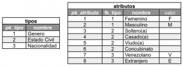

El modelo Atributos & Tipos (EAV) o List of Values (LOV)
30/10/2010Durante el diseño de un correcto modelo relacional de una base de datos, no cabe la duda la implementación de un modelo genérico de tablas llamado “Atributos & Tipos” u otros lo llaman (EAV, Entity Attribute Value) en sus siglas en ingles, el cual aumenta la flexibilidad y robustez del mismo.
La intención de este tipo de “patrón” de diseño por llamarlo de alguna forma, es que permite tener un dominio detallado sobre todos los atributos que podamos asignarle a cualquier elemento que es almacenado, en pocas palabras, cada registro habla por si solo y no tendrá libre interpretación, las aplicaciones que hacen uso de estos valores serán dominados directamente por el manejador de base de datos, y al final todo este proceso conlleva a una simple solución de auto-documentación e integridad de los datos.
Implementar este patrón conlleva una serie de pasos, en primer lugar; tenemos las tablas que contendrán toda la clasificación de los atributos, en segundo lugar; cada tabla tendrá una relación sobre las tabla atributos, en tercer lugar; existirá una vista por cada tipo de atributo para ayudar a ser mas ordenados, por ultimo; se implementan una serie de trigger de control sobre las tablas relacionadas con los atributos, evitando cualquier confusión en su uso.
Manos a la obra!, observemos el siguiente modelo físico:

Este tipo de modelo genérico consiste en dos tablas relacionadas, la primera es llamada “Tipos” la segunda se encuentra relacionada a está con el nombre “Atributos”, esto existe con la razón de que un tipo de entidad tiene una serie de atributos, por ejemplo; si hablamos de un tipo de estado civil, se esta haciendo referencia a 4 atributos: Soltero(a), Casado(a), Viudo(a) y Concubinato, a continuación mostramos la instancias de las tablas mencionadas.

Este tipo de modelo evita crear una tabla por cada “Tipo” implementado en la Base de Datos, ya que pueden existir muchos, pero si se debe crear una vista por cada tipo para obtener los posibles atributos de forma obligatoria, por otro lado se evita la asignación de valores que solo tienen significado ambiguo, el cual puede conllevar a una incorrecta interpretación, por ejemplo:
- Primer caso: Si hablamos de un tipo llamado genero, es compuesto de los atributos Masculino y Femenino, resulta que para algunos diseñadores o programadores utilizan un valor booleano, el cual le dan su propio significado, true para femenino y false para masculino e incluso al revés. ¿Quien sabe la respuesta?, una posible documentación, una exploración de los datos, o alguien lo comentó, el resultado es el mismo, no existe una información que se encuentra consistente.
- Segundo caso: Complementando el caso anterior, envés de utilizar valores booleano para definir los atributos, también suelen utilizar de forma incorrecta letras o abreviaturas, como por ejemplo; se utiliza la letra “M” para definir Masculino y “F” para definir Femenino, en otros casos para indicar si una persona es Venezolana colocan “VEN” y si es Extranjera colocan “EXT”.
Utilizar estos mecanismos son imprecisos y generan una serie de inconvenientes, como lo son: Leve aumento del tamaño de la tabla y del tiempo de búsqueda, a pesar que colocan consultas con el uso del CASE para convertir estos valores en “Entendibles”, por lo que es un esfuerzo totalmente impráctico, o mucho peor, la aplicación realiza la interpretación de estos valores.
Con la creación de las tablas atributos & tipos y las respectivas vistas por cada uno de los tipos definidos no es suficiente, recuerden que dentro de la tabla atributos existen una gran cantidad de registros asociados a la tabla tipos, por lo que la tabla atributos a su ves se encuentra relacionada una o varias veces a una misma tabla. Por lo que surge un problema, cada clave foránea puede ser puesta en el sitio incorrecto, es aquí donde se les da uno de los tantos usos a los disparadores o “triggers”, con el fin de poder controlar su integridad.
Ilustramos la instancia de la tabla “usuarios”, con fines didácticos solamente se mostraran las columnas básicas para poder explicar y simplificar la problemática planteada, observe el valores de las claves foráneas y comparelas con las claves primarias definidas anteriormente en la tabla atributos:

En la tabla se ubican cuatro (4) recuadros con el borde de color rojo, cada uno de ellos tiene valores que no corresponden al significado de la columna, por ejemplo: en la columna “fk_nacionalidad” están las clave foráneas 1 y 6, donde el valor 1 hace referencia al atributo Femenino y el 6 al Concubinato, como podemos apreciar no existe ninguna relación conceptual con la Nacionalidad.
A continuación realizaremos un ejemplo básico pero completo, explicado pasos a paso para ir entendiendo, utilizando un modelo simple que casi todo sistema debería utilizar. Primero debemos conocer el modelo físico de la pequeña base de datos que vamos a construir.

Fin.